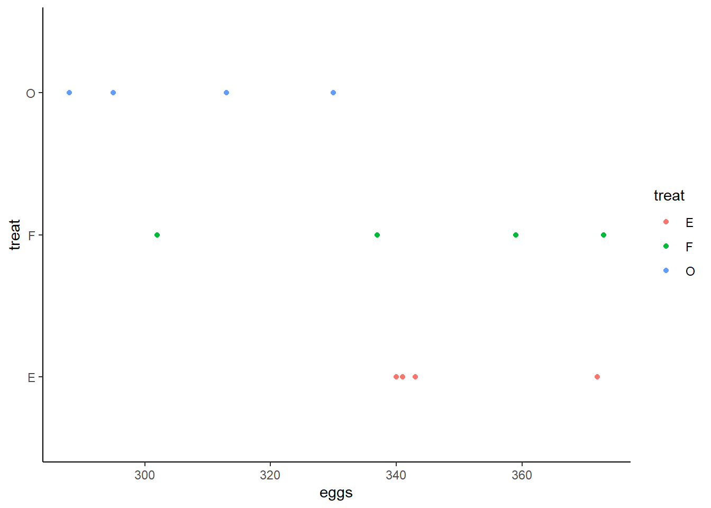
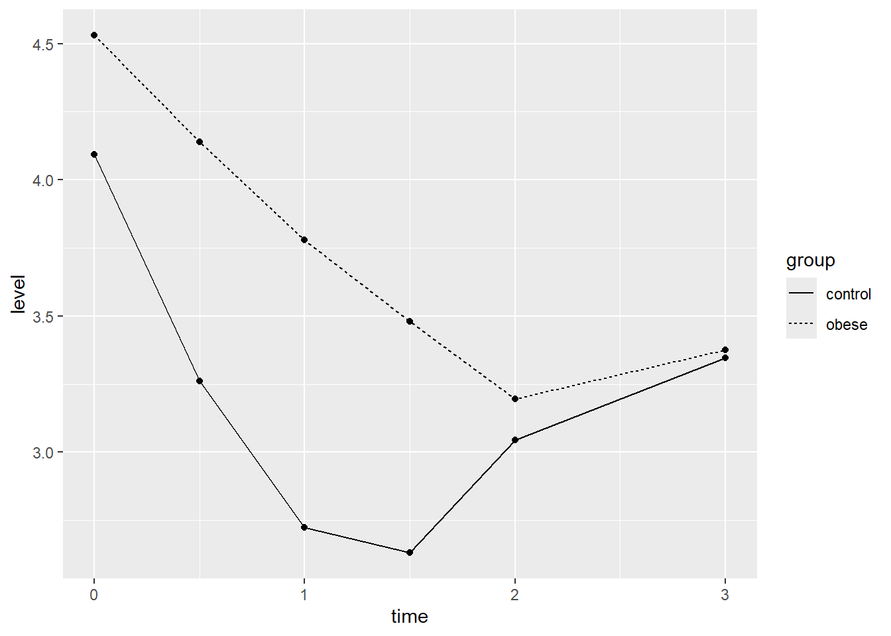
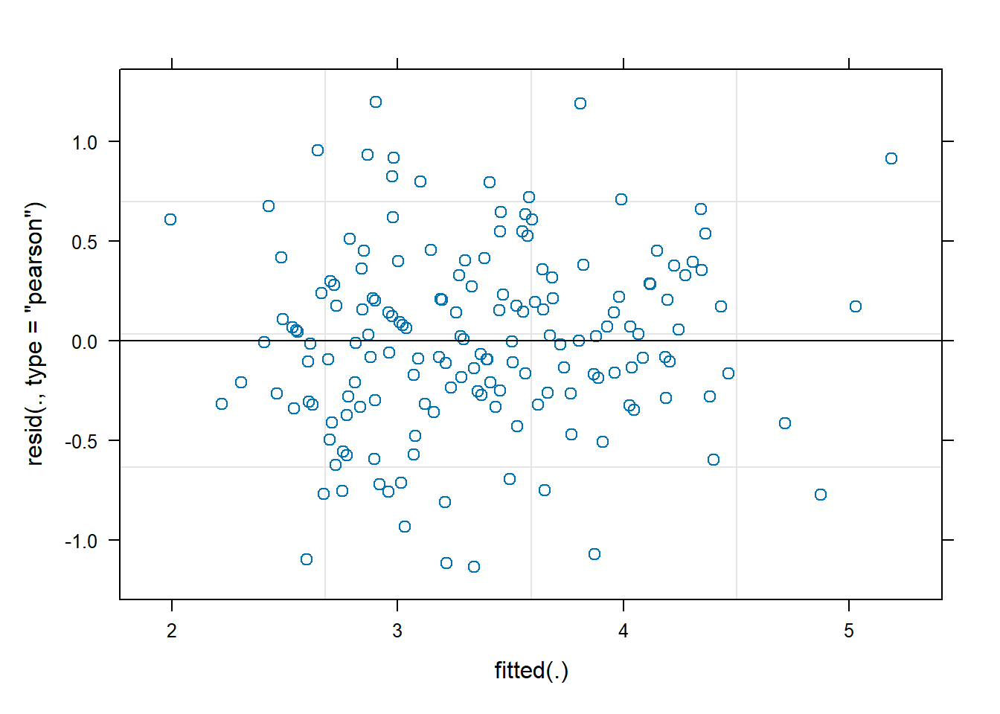
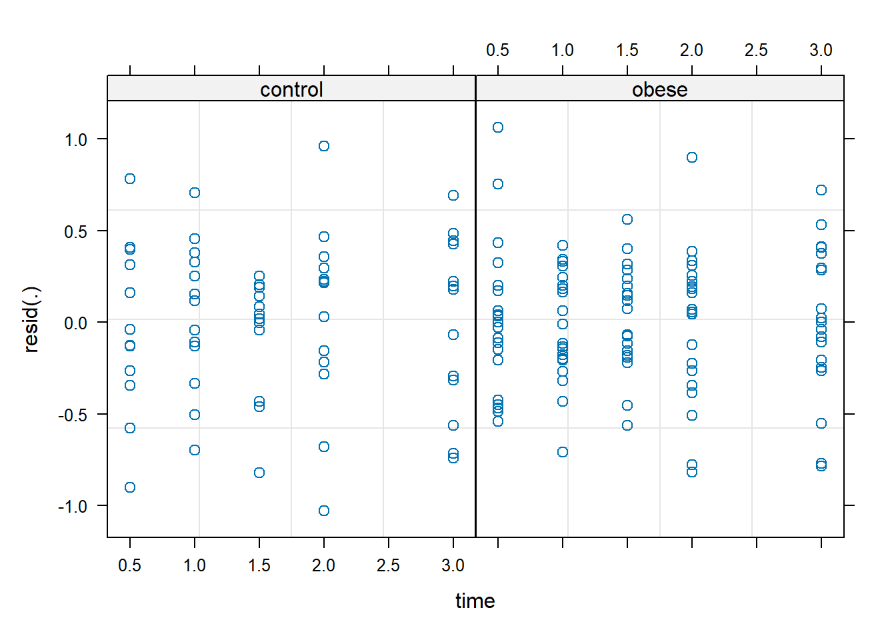
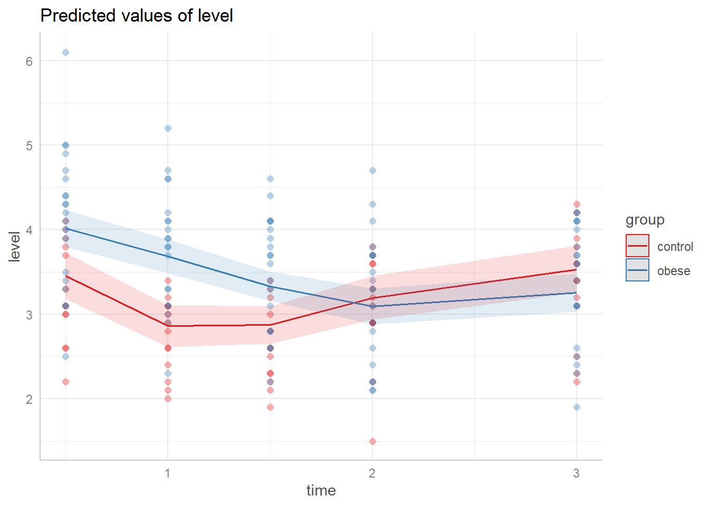
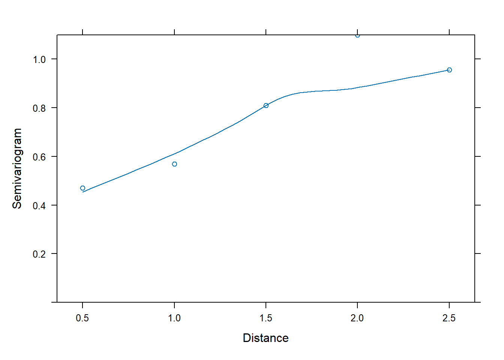
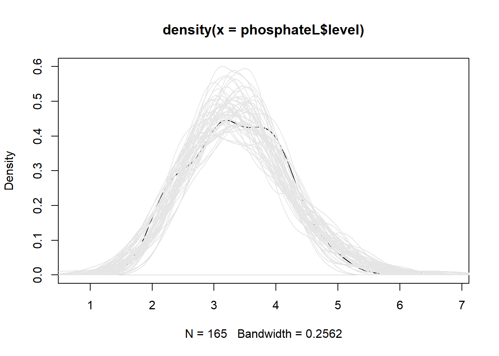

Mixed-Effect Models
Multilevel model: two levels
The eggprod data in the faraway package contains data on
egg production. (Faraway 2016) Six pullets
(young hens) were placed into each of 12 pens. Four blocks were formed
from groups of 3 pens based on location. Three treatments were applied.
The number of eggs produced was recorded. Start by visualizing the
distribution of eggs produced split by blocks and treatment.
library(faraway)
data("eggprod")
library(ggplot2)
# Plotting eggs by treat
ggplot(eggprod, aes(x=treat, y=eggs, color = treat)) +
geom_point() +
coord_flip() + # Flipping x and y coordinates to mimic Base R plotting
theme_classic() # Using classic theme
# Plotting eggs by block
ggplot(eggprod, aes(x=block, y=eggs, color = block)) +
geom_point() +
coord_flip() +
theme_classic() 
This shows visually that treatment O may have produced fewer eggs than treatment F or E whose distributions are more similar and closer to one another. The distributions of eggs produced by each block seem to overlap and are very similar to one another.
Now, we model the number of eggs produced with treat as
a fixed effect and block as a random effect using the
lmer() function.
library(lme4)
m <- lmer(eggs ~ treat + (1|block), data = eggprod)We specified the formula within the lmer() function
following the format
outcome ~ fixed effect + (random slope | random intercept).
The random slope is set to 1, therefore it is a fixed slope. In other
words, all cases will have the same slope estimated. The random
intercept is set as block which means that the intercept
will be allowed to vary by block. Before analyzing any
statistics on this model, we first need to confirm we have met all the
necessary assumptions. The mlmtools package (Laura Jamison, Jessica Mazen, and Erik Ruzek
2022) offers a function called mlm_assumptions()
which will test all the appropriate assumptions for a multilevel
model.
library(mlmtools)
m_assum <- mlm_assumptions(m)
# Homogeneity of variance
m_assum$homo.test## Analysis of Variance Table
##
## Response: model.Res2
## Df Sum Sq Mean Sq F value Pr(>F)
## group 3 295471 98490 0.7357 0.5595
## Residuals 8 1070935 133867The output from the test of homogeneity of variance indicates that this assumption has been met. \(p = 0.56\) which is greater than .05, indicating that the residual variation across clusters is not significantly different.
# Outliers
m_assum$outliers## [1] "No outliers detected."# Multicollinearity
m_assum$multicollinearity## [1] "Model contains fewer than 2 terms, multicollinearity cannot be assessed.\n"No outliers were detected in the model and since we only have one
predictor multicollinearity is not necessary to test. The remaining
tests included in m_assum are plots we need to visually
inspect.
m_assum$fitted.residual.plot
The first plot to investigate is the above Fitted vs. Residuals plot. On the x-axis are the fitted (predicted) values and on the y-axis are the residuals (error). A dashed line appears at Residuals = 0 to represent where the model is perfectly predicting a value. What we look for here is whether the residuals lie randomly around the 0 line or if a pattern appears in relation to the predicted values. We would want this distribution to appear rather parallel to the 0 line, indicating that residuals are fairly comparable to one another. Lastly, no one point should stand out from the rest. If one does, it means there is an outlier and that one point is be drastically misestimated. All 3 of these criteria are met in the above plot.
Lastly, we can investigate the assumption of residual normality.
m_assum$resid.normality.plotThe above QQ-plot compares the model residuals to a normal distribution. Ideally, all points should be as close as possible to the line and be evenly distributed around it (e.g., not all points are above the line; points don’t form a curve below the line). We can see that the points are randomly and evenly distributed around the line and can assume we meet this assumption.
Now, we can inspect the model estimates and its overall fit. (Faraway 2006) Does treat appear to
affect the number of eggs, and if so, which treatment seems superior? We
can look into this assessing both model fit and significance of
predictors. First, a summary of the model is useful to look at.
summary(m)## Linear mixed model fit by REML ['lmerMod']
## Formula: eggs ~ treat + (1 | block)
## Data: eggprod
##
## REML criterion at convergence: 85.4
##
## Scaled residuals:
## Min 1Q Median 3Q Max
## -1.71233 -0.47453 -0.02845 0.64196 1.42942
##
## Random effects:
## Groups Name Variance Std.Dev.
## block (Intercept) 129.9 11.40
## Residual 386.9 19.67
## Number of obs: 12, groups: block, 4
##
## Fixed effects:
## Estimate Std. Error t value
## (Intercept) 349.00 11.37 30.702
## treatF -6.25 13.91 -0.449
## treatO -42.50 13.91 -3.056
##
## Correlation of Fixed Effects:
## (Intr) treatF
## treatF -0.612
## treatO -0.612 0.500Looking at the predictor, the fixed intercept, 349.00, is the mean eggs when the treat factor is at its lowest level (treatE). The intercept fixed effect is the grand mean of eggs across the entire sample when treat = “E” (349.00). The treatF and treatO fixed effects can be interpreted as the difference in means (e.g., treatE - treatF). Therefore, treatF produces 6.25 less mean egg production and treatO produces 42.50 less mean egg production.
This is further substantiated by looking at the means by treatment. Observed means of eggs by treat:
tapply(eggprod$eggs, eggprod$treat, mean)## E F O
## 349.00 342.75 306.50We see that the means of treatment E and F
are closer to each other than either of them are to treatment
O. To test whether this effect is significant, there are
two options. We can use the car::Anova function, or load
the lmerTest package (Kuznetsova,
Brockhoff, and Christensen 2017).
car::Anova(m)## Analysis of Deviance Table (Type II Wald chisquare tests)
##
## Response: eggs
## Chisq Df Pr(>Chisq)
## treat 10.887 2 0.004324 **
## ---
## Signif. codes: 0 '***' 0.001 '**' 0.01 '*' 0.05 '.' 0.1 ' ' 1The Anova() function shows that the model including
treat is a better fit (\(\chi^2(2,N = 12) =
10.887, p < .01\)) than the null model (intercept only). This
tells us that this is a better fitting model, but does not provide
deeper information as to potential significant differences within levels
of our predictor. To investigate this, we can load lmerTest
package and rerun the model. This will add a significance marker to the
independent variables if they are significant.
library(lmerTest)
m <- lmer(eggs ~ treat + (1|block), data = eggprod)
summary(m)## Linear mixed model fit by REML. t-tests use Satterthwaite's method [
## lmerModLmerTest]
## Formula: eggs ~ treat + (1 | block)
## Data: eggprod
##
## REML criterion at convergence: 85.4
##
## Scaled residuals:
## Min 1Q Median 3Q Max
## -1.71233 -0.47453 -0.02845 0.64196 1.42942
##
## Random effects:
## Groups Name Variance Std.Dev.
## block (Intercept) 129.9 11.40
## Residual 386.9 19.67
## Number of obs: 12, groups: block, 4
##
## Fixed effects:
## Estimate Std. Error df t value Pr(>|t|)
## (Intercept) 349.00 11.37 7.99 30.702 1.4e-09 ***
## treatF -6.25 13.91 6.00 -0.449 0.6690
## treatO -42.50 13.91 6.00 -3.056 0.0224 *
## ---
## Signif. codes: 0 '***' 0.001 '**' 0.01 '*' 0.05 '.' 0.1 ' ' 1
##
## Correlation of Fixed Effects:
## (Intr) treatF
## treatF -0.612
## treatO -0.612 0.500This shows that treatE and treatO are significantly different from one another, but neither is significantly different from treatF. We can further confirm this using pairwise comparisons, adjusted p-values and confidence intervals:
library(emmeans)
emmeans(m, pairwise ~ treat)## $emmeans
## treat emmean SE df lower.CL upper.CL
## E 349 11.4 7.99 323 375
## F 343 11.4 7.99 317 369
## O 306 11.4 7.99 280 333
##
## Degrees-of-freedom method: kenward-roger
## Confidence level used: 0.95
##
## $contrasts
## contrast estimate SE df t.ratio p.value
## E - F 6.25 13.9 6 0.449 0.8965
## E - O 42.50 13.9 6 3.056 0.0508
## F - O 36.25 13.9 6 2.606 0.0892
##
## Degrees-of-freedom method: kenward-roger
## P value adjustment: tukey method for comparing a family of 3 estimatesemmeans(m, pairwise ~ treat) |> confint()## $emmeans
## treat emmean SE df lower.CL upper.CL
## E 349 11.4 7.99 323 375
## F 343 11.4 7.99 317 369
## O 306 11.4 7.99 280 333
##
## Degrees-of-freedom method: kenward-roger
## Confidence level used: 0.95
##
## $contrasts
## contrast estimate SE df lower.CL upper.CL
## E - F 6.25 13.9 6 -36.426 48.9
## E - O 42.50 13.9 6 -0.176 85.2
## F - O 36.25 13.9 6 -6.426 78.9
##
## Degrees-of-freedom method: kenward-roger
## Confidence level used: 0.95
## Conf-level adjustment: tukey method for comparing a family of 3 estimatesWe see that none of the mean differences are significant by treatment
group. However, the t.ratio is higher for E-O
and F-O than E-F. Visually we can also see
this using an effect plot:
library(ggeffects)
ggpredict(m, terms = ~ treat) |> plot(add.data = TRUE)
This plot shows us the spread of predicted egg values based on their
treatment group. The black dot in the middle of each line represents the
prediction and the length of the line represents its 95% confidence
interval. The dots around each line represent the true data points. We
can see the same trend as indicated by their predicted value,
E and F are closer to one another than either
is to O, and we can also see that the spread of predicted
values for O overlaps with E and
F’s spreads.
Another statistic of interest for multilevel models is the Intraclass
Correlation Coefficient (ICC). The ICC tells us how strongly
observations within clusters are associated with one another. In other
words, it represents the correlation of any two units within a cluster.
To assess this, we can use the ICCm function from the
mlmtools package.
ICCm(m)## Likeness of eggs values of units in the same block factor: 0.251The likeness of egg production in the same block is .25, in other
words, the correlation between any two egg production observations
within the same block is .25. We can also look at what the variation is
between clusters using the VarCorr() function.
VarCorr(m)## Groups Name Std.Dev.
## block (Intercept) 11.399
## Residual 19.670The variation around the random intercept for block is 11.40. We can
also look at the \(R^2\) values for the
model to get an idea of how much variation in egg production is
explained. We can use the rsqmlm() function from the
mlmtools package to look at this.
rsqmlm(m)## 42.56% of the total variance is explained by the fixed effects.
## 57.00% of the total variance is explained by both fixed and random effects.We see that by including just the fixed effects, 42.56% of the variance in egg production is explained. By including both the fixed and random effects, the variance explained increases to 57%.
Repeated-Measures model
The book Linear Mixed Models presents a study on rat brains (West, Welch, and Galecki 2015). In this study, five rats had three regions of their brains measured for “activation” after two different treatments. Since all rats received both treatments and had the same three regions measured both times, this is a repeated-measures analysis. Of interest is how the numeric dependent variable, activate, changes based on treatment and brain region.
The data is available in the file “rat_brain.dat”. We can import this
file using the read.table() function. We set
header = TRUE because the first row of the data contains
column headers.
rats <- read.table("data/rat_brain.dat", header = TRUE)The animal column contains the id for each rat. Below we use the
head() function to view the first six rows of data. Notice
the first rat, R111097, has one measure for each combination of
treatment and region. This is why we refer to this as repeated-measures
data. Looking at the structure of the data, treatment and region are
being read in as integers. This means that if we were to use the data as
is, the model will interpret 0 as a meaningful value for each of these
variables. To avoid this, we will convert them both to factors.
head(rats)## animal treatment region activate
## 1 R111097 1 1 366.19
## 2 R111097 1 2 199.31
## 3 R111097 1 3 187.11
## 4 R111097 2 1 371.71
## 5 R111097 2 2 302.02
## 6 R111097 2 3 449.70str(rats)## 'data.frame': 30 obs. of 4 variables:
## $ animal : chr "R111097" "R111097" "R111097" "R111097" ...
## $ treatment: int 1 1 1 2 2 2 1 1 1 2 ...
## $ region : int 1 2 3 1 2 3 1 2 3 1 ...
## $ activate : num 366 199 187 372 302 ...rats$treatment <- as.factor(rats$treatment)
rats$region <- as.factor(rats$region)We can start off plotting the data. The stripplot() from
the lattice package (Sarkar
2008) produces a one-dimensional scatterplot of the outcome
variable (activate) by rat.
library(lattice)
stripplot(activate ~ animal, data=rats, scales=list(tck=0.5))We can consider and fit several models with these data. The first model will be the null model containing no predictors only a random slope by animal. Then treatment will be introduced, treatment and region, and then the interaction between treatment and region.
m <- lmer(activate ~ 1 + (1 | animal), data = rats)
m2 <- lmer(activate ~ treatment + (1 | animal), data = rats)
m3 <- lmer(activate ~ treatment + region + (1 | animal), data = rats)
m4 <- lmer(activate ~ treatment*region + (1 | animal), data = rats)Now we can compare model fit. We’ll start by looking at the AIC values for each model. Lower AIC value suggests a model will perform better on out-of-sample data. These AIC values indicate that the model containing the interaction between treatment and region is the best fit for these data.
AIC(m, m2, m3, m4)## df AIC
## m 3 385.1023
## m2 4 355.0961
## m3 6 328.2485
## m4 8 291.2822We can also look to see how much more variance in activation is explained by the model including the interaction than the null model.
varCompare(m, m4)## m4 explains 70.93% more variance than mWe see that the model including the interaction explains 70.93% more variance than the null model. This is quite a large increase in variance explained and supports this model being a good model for these data. We can also look at the \(R^2\) values for the model containing the interaction. We see that 72.09% of the variance is explained by the fixed effects (the interaction) and 90.63% of the variance is explained by both the fixed and random effects.
rsqmlm(m4)## 72.09% of the total variance is explained by the fixed effects.
## 90.63% of the total variance is explained by both fixed and random effects.Now let’s interpret the model parameter estimates.
summary(m4)## Linear mixed model fit by REML ['lmerMod']
## Formula: activate ~ treatment * region + (1 | animal)
## Data: rats
##
## REML criterion at convergence: 275.3
##
## Scaled residuals:
## Min 1Q Median 3Q Max
## -1.4643 -0.5762 0.0802 0.4072 1.5509
##
## Random effects:
## Groups Name Variance Std.Dev.
## animal (Intercept) 4850 69.64
## Residual 2450 49.50
## Number of obs: 30, groups: animal, 5
##
## Fixed effects:
## Estimate Std. Error t value
## (Intercept) 428.51 38.21 11.214
## treatment2 98.20 31.31 3.137
## region2 -190.76 31.31 -6.093
## region3 -216.21 31.31 -6.906
## treatment2:region2 99.32 44.27 2.243
## treatment2:region3 261.82 44.27 5.914
##
## Correlation of Fixed Effects:
## (Intr) trtmn2 regin2 regin3 trt2:2
## treatment2 -0.410
## region2 -0.410 0.500
## region3 -0.410 0.500 0.500
## trtmnt2:rg2 0.290 -0.707 -0.707 -0.354
## trtmnt2:rg3 0.290 -0.707 -0.354 -0.707 0.500Looking first at the fixed effects, the intercept (428.51) can be interpreted as the grand mean of activate when treatment and region are both 1 (the lowest level of each factor). The treatment2 estimate (98.20) is the mean difference between treatment 2 and treatment 1 when region is 1. Similarly, the region2 estimate (-190.76) is the mean difference between region 2 and region 1 when treatment is 1, and region3 (-216.21) is the mean difference between region 3 and region 2 when treatment is 1. The interaction terms require some calculation to full interpret. Since we have two categorical predictors in this interaction, we can interpret their coefficients in this way:
\(\text{intercept} + \text{factor level main effect 1} + \text{factor level main effect 2} + \text{interaction effect}\)
For example, when looking at treatment2:region2 we will take the values from the Estimates column that align with the following fixed effects:
\(\text{(Intercept)} + \text{treatment2} + \text{region2} + \text{treatment2:region2}\)
Which gives us:
\(428.51 + 98.20 - 190.76 + 99.32 = 435.27\)
This is also the mean of activate when treatment is 2 and region is 2:
mean(rats[rats$treatment=="2" & rats$region=="2","activate"])## [1] 435.27We can do the same thing for treatment2:region3:
\(428.51 + 98.20 - 216.21 + 261.82 = 572.32\)
Which is the mean of activate when treatment is 2 and region is 3:
mean(rats[rats$treatment=="2" & rats$region=="3","activate"])## [1] 572.32To get a better understanding how this interaction is functioning,
let’s plot this model using the ggeffects package (Lüdecke 2018).
library(ggeffects)
ggeffect(m4, terms = c("region", "treatment")) |>
plot(add.data = TRUE, jitter = 0)This shows the relationship between treatment groups by region.
Within region one, the estimates for activate by treatment are closer
together, then in region 2 the estimate for treatment 1 and treatment 2
decrease while their magnitude of difference also increases. Then in
region 3 their magnitude of differences increases further as treatment 2
increases and treatment 1 decreases. This provides visual evidence that
the relationship between treatment groups changes based on the region.
We can use the Anova() function from the car
package (Fox and Weisberg 2019) to assess
the statistical significance of the visual evidence.
car::Anova(m4)## Analysis of Deviance Table (Type II Wald chisquare tests)
##
## Response: activate
## Chisq Df Pr(>Chisq)
## treatment 146.246 1 < 2.2e-16 ***
## region 41.219 2 1.121e-09 ***
## treatment:region 35.649 2 1.815e-08 ***
## ---
## Signif. codes: 0 '***' 0.001 '**' 0.01 '*' 0.05 '.' 0.1 ' ' 1This indicates that the overall interaction is indeed significant.
However, we only know that an interaction exists, we must conduct
further comparison tests. We want to test the difference between
treatment levels within each region. The contrast()
function from the emmeans package (Lenth 2022) allows us to do this. First, we
must create an emmeans object to pass to the contrast()
function. We will tell the emmeans() function which model
to use (m4) and which comparisons we want to test. To do this, we use
the | symbol to say test each treatment comparison by
region. Finally, since we are testing all pairwise comparisons we set
the adjust argument to “tukey” to use the Tukey post-hoc multiple
comparison adjustment.
library(emmeans)
m4.emm <- emmeans(m4, ~ treatment | region, adjust = "tukey")
contrast(m4.emm)## region = 1:
## contrast estimate SE df t.ratio p.value
## treatment1 effect -49.1 15.7 20 -3.137 0.0052
## treatment2 effect 49.1 15.7 20 3.137 0.0052
##
## region = 2:
## contrast estimate SE df t.ratio p.value
## treatment1 effect -98.8 15.7 20 -6.309 <.0001
## treatment2 effect 98.8 15.7 20 6.309 <.0001
##
## region = 3:
## contrast estimate SE df t.ratio p.value
## treatment1 effect -180.0 15.7 20 -11.500 <.0001
## treatment2 effect 180.0 15.7 20 11.500 <.0001
##
## Degrees-of-freedom method: kenward-roger
## P value adjustment: fdr method for 2 testsThe output is split by each region. It tests each comparison and within each region, therefore each region has two lines comparing treatment 1 to treatment 2 and vice versa. Consequently, these lines will conduct equivalent tests just with opposite signs in mean differences. Looking at the “p.value” column, all pairwise comparisons were significant. As we saw in the plot, the magnitude of difference between treatment groups increases from region 1 (49.1) to region 2 (98.8) and then region 3 (180.0).
Longitudinal model
The text Statistical Methods for the Analysis of Repeated Measurements (Davis 2002) presents data on plasma inorganic phosphate measurements for 33 subjects (13 controls, 20 obese) after an oral glucose challenge. Measurements were taken at baseline, 0.5, 1, 1.5, 2, and 3 hours. Of interest is how the plasma inorganic phosphate levels differ over time and between the two groups. We present two models to investigate these questions:
- a linear mixed-effect model
- a generalized least squares model
Below we read in the data, provide columns names, and format the group column as a factor. Notice the data is in “wide” format, with one record per subject.
phosphate <- read.table("data/phosphate.dat", header = FALSE)
names(phosphate) <- c("group", "id", "t0", "t0.5", "t1", "t1.5", "t2", "t3")
phosphate$group <- factor(phosphate$group, labels = c("control", "obese"))
head(phosphate)## group id t0 t0.5 t1 t1.5 t2 t3
## 1 control 1 4.3 3.3 3.0 2.6 2.2 2.5
## 2 control 2 3.7 2.6 2.6 1.9 2.9 3.2
## 3 control 3 4.0 4.1 3.1 2.3 2.9 3.1
## 4 control 4 3.6 3.0 2.2 2.8 2.9 3.9
## 5 control 5 4.1 3.8 2.1 3.0 3.6 3.4
## 6 control 6 3.8 2.2 2.0 2.6 3.8 3.6Reshaping the data facilitates data visualization. The
pivot_longer() function from the tidyr package makes quick
work of this. (Wickham and Girlich
2022)
- The
names_to = "time"argument moves the column names, t0 - t3, into a single column called “time” - The
names_prefix = "t"argument strips “t” from the column names that were placed in the “time” column. - The
names_transform = list(time = as.numeric)converts values in the new “time” column to numeric. - The
values_to = "level"moves the values under the t0 - t3 columns into a single column called “level”
library(tidyr)
phosphateL <- pivot_longer(phosphate, cols = t0:t3,
names_to = "time",
names_prefix = "t",
names_transform = list(time = as.numeric),
values_to = "level")
head(phosphateL)## # A tibble: 6 × 4
## group id time level
## <fct> <int> <dbl> <dbl>
## 1 control 1 0 4.3
## 2 control 1 0.5 3.3
## 3 control 1 1 3
## 4 control 1 1.5 2.6
## 5 control 1 2 2.2
## 6 control 1 3 2.5Now we can use the ggplot2 package (Wickham 2016) to visualize the data. Below we plot the phosphate trajectories over time for each subject, with the plots broken out by group. In addition we add a smooth trend line to each plot to visualize the “average” trend for each group. There appears to be a great deal of variability between the subjects within each group. It also looks like the phosphate levels drop quickly within the first hour for the control group compared to the obese group.
library(ggplot2)
ggplot(phosphateL) +
aes(x = time, y = level, group = id) +
geom_line() +
geom_smooth(aes(group = group), se = FALSE, linewidth = 2) +
facet_wrap(~group)We can also compute simple means by time and group and compare
visually. Below we use aggregate() to compute the means and
then pipe into the ggplot code. Again it appears the phosphate levels
for the control group drop faster and lower than the obese group, though
by hour 3 they seem about the same.
aggregate(level ~ time + group, data = phosphateL, mean) |>
ggplot() +
aes(x = time, y = level, linetype = group) +
geom_point() +
geom_line()
In both plots it appears the effect of time differs between groups. Therefore it seems reasonable to allow these terms to interact in our mixed-effect model.
Before we begin modeling, we make the baseline phosphate measure a
predictor since a baseline measure is technically not a response to any
treatment or condition. (Senn 2006) To do
this we use pivot_longer() again but this time without
selecting column t0. When finished we rename the column as “baseline”.
We now have a column called “baseline” in our long data frame that we
will use as a predictor in our models.
phosphateL <- pivot_longer(phosphate, cols = t0.5:t3,
names_to = "time",
names_prefix = "t",
names_transform = list(time = as.numeric),
values_to = "level")
names(phosphateL)[3] <- "baseline"
head(phosphateL)## # A tibble: 6 × 5
## group id baseline time level
## <fct> <int> <dbl> <dbl> <dbl>
## 1 control 1 4.3 0.5 3.3
## 2 control 1 4.3 1 3
## 3 control 1 4.3 1.5 2.6
## 4 control 1 4.3 2 2.2
## 5 control 1 4.3 3 2.5
## 6 control 2 3.7 0.5 2.6Finally we renumber group ids in the obese group to pick up where the control group id numbering leaves off at 13.
phosphateL$id <- ifelse(phosphateL$group == "obese",
phosphateL$id + 13,
phosphateL$id)Linear Mixed-Effect Model
To fit our mixed-effect models we will use the lmer()
function in the lme4 package (Bates et al.
2015). A mixed-effect model essentially allows us to fit separate
models to each subject. We assume each subject exerts some random
effect on certain model parameters. The most basic mixed-effect
model is the random intercept model, where each subject receives their
own intercept. This is the model we will fit.
Below we model level as a function of baseline (t0), time, group, and
the time:group interaction. We also fit a random intercept for each
subject using the syntax (1|id). The summary output shows a
fairly large t value for the interaction, which provides good evidence
that the interaction is reliably negative. (The summary output for lmer
models does not display p values since the null distributions for the t
values are unknown for unbalanced data in the mixed-effect model
framework.)
library(lme4)
m <- lmer(level ~ baseline + time * group + (1|id), data = phosphateL)
summary(m, corr = FALSE)## Linear mixed model fit by REML ['lmerMod']
## Formula: level ~ baseline + time * group + (1 | id)
## Data: phosphateL
##
## REML criterion at convergence: 269.1
##
## Scaled residuals:
## Min 1Q Median 3Q Max
## -2.33236 -0.58048 -0.00628 0.57732 2.45665
##
## Random effects:
## Groups Name Variance Std.Dev.
## id (Intercept) 0.05685 0.2384
## Residual 0.23781 0.4877
## Number of obs: 165, groups: id, 33
##
## Fixed effects:
## Estimate Std. Error t value
## (Intercept) 0.02284 0.37509 0.061
## baseline 0.68366 0.08465 8.076
## time 0.11310 0.07031 1.608
## groupobese 0.97883 0.18844 5.194
## time:groupobese -0.42850 0.09032 -4.744If we view the coefficients we see each subject has their own model, but only the intercept varies between the subjects. Hence the reason we call this a random-intercept model.
head(coef(m)$id)## (Intercept) baseline time groupobese time:groupobese
## 1 -0.20776681 0.6836591 0.1130977 0.9788342 -0.4285031
## 2 -0.02798001 0.6836591 0.1130977 0.9788342 -0.4285031
## 3 0.11081072 0.6836591 0.1130977 0.9788342 -0.4285031
## 4 0.18347980 0.6836591 0.1130977 0.9788342 -0.4285031
## 5 0.11714532 0.6836591 0.1130977 0.9788342 -0.4285031
## 6 0.04369291 0.6836591 0.1130977 0.9788342 -0.4285031Before we use or interpret this model, we should assess the residuals
vs fitted value plot. We can create this plot by simply calling
plot() on the model object. We would like to see a uniform
distribution of residuals hovering closely around 0. This plot looks OK
for the most part.
plot(m)
The model we fit assumes the effect of time is linear, and that the linear effect of time changes for each group. We can visualize the model using the ggeffects package (Lüdecke 2018). With the data added it seems like the linear effects may be too simplistic.
library(ggeffects)
ggeffect(m, terms = c("time", "group")) |>
plot(add.data = TRUE, jitter = 0)
Given our exploratory plots we may want to entertain a
non-linear effect of time. One way to do this is with natural
cubic splines. Using the splines package (R Core
Team 2022), we can specify that we want to allow the trajectory
of time to change directions up to 3 times using the syntax
ns(time, df = 3). We skip summarizing the model and look at
the residuals vs fitted value plot. This looks about the same as the
previous plot but a careful look at the y axis reveals we have slightly
smaller residuals.
library(splines)
m2 <- lmer(level ~ baseline + ns(time, df = 3) * group + (1|id),
data = phosphateL)
plot(m2)We can also examine the distribution of residuals by time within each group using the syntax below. The plot shows residuals evenly distributed and not too far from 0, which is good.
plot(m2, resid(.) ~ time | group)
Just as with linear models, we assume errors for a mixed-effect model
are drawn from a Normal distribution. A QQ plot helps us assess this
assumption. For models fit with lme4 we need to use the
qqmath() function from the lattice package (Sarkar 2008) to create a QQ plot. The plot
below provides no reason for us to question this assumption.
lattice::qqmath(m2)We can compare the models’ AIC values to assess whether the more complicated non-linear model is better. Recall that lower AIC values suggest a model will perform better on out-of-sample data. It appears the model with non-linear effects is a good deal better than the model with linear effects. The df column refers to the number of parameters in the model.
AIC(m, m2)## df AIC
## m 7 283.0897
## m2 11 252.1101The non-linear model seems better than the original linear model. But
is the non-linear model a good model? One way to assess this is
to simulate data using the model and see how it compares to the original
data. Below we use the simulate() function to simulate 50
sets of phosphate values from our non-linear model. Next we plot a
smooth histogram of the observed data. Then we loop through the
simulated data and plot a smooth histogram for each simulation. What we
see is that our model is generating data that looks pretty similar to
our original data, though it seems to be a little off in the 3 - 4
range. It’s not perfect, and we wouldn’t want it to be, but it looks
good enough.
sim1 <- simulate(m2, nsim = 50)
plot(density(phosphateL$level), ylim = c(0, 0.6))
for(i in 1:50)lines(density(sim1[[i]]), col = "grey90")As before, let’s use ggeffects to visualize our model. We see the bend in our fitted lines due to the non-linear effects.
ggeffect(m2, terms = c("time", "group")) |>
plot(add.data = TRUE, jitter = 0)
Looking at the summary for model m2 reveals coefficients that are impossible to interpret. This is one of the drawbacks of models with non-linear effects. However we see under the Random effects section that there is more variation within subjects (0.4246) than between subjects (0.2615).
summary(m2, corr = FALSE)## Linear mixed model fit by REML ['lmerMod']
## Formula: level ~ baseline + ns(time, df = 3) * group + (1 | id)
## Data: phosphateL
##
## REML criterion at convergence: 230.1
##
## Scaled residuals:
## Min 1Q Median 3Q Max
## -2.42067 -0.52371 0.07521 0.58973 2.49791
##
## Random effects:
## Groups Name Variance Std.Dev.
## id (Intercept) 0.06836 0.2615
## Residual 0.18027 0.4246
## Number of obs: 165, groups: id, 33
##
## Fixed effects:
## Estimate Std. Error t value
## (Intercept) 0.47602 0.37259 1.278
## baseline 0.68366 0.08465 8.076
## ns(time, df = 3)1 0.14832 0.23792 0.623
## ns(time, df = 3)2 -0.79764 0.28400 -2.809
## ns(time, df = 3)3 0.61529 0.15111 4.072
## groupobese 0.56063 0.18006 3.114
## ns(time, df = 3)1:groupobese -1.15172 0.30561 -3.769
## ns(time, df = 3)2:groupobese -0.43565 0.36481 -1.194
## ns(time, df = 3)3:groupobese -1.14106 0.19411 -5.878Judging from the effect display the interaction in the model is
warranted, but we can formally test and verify this using the
Anova() function in the car package (Fox and Weisberg 2019). The large chi-square
statistic (37.6901) and small p-value confirm this.
library(car)
Anova(m2)## Analysis of Deviance Table (Type II Wald chisquare tests)
##
## Response: level
## Chisq Df Pr(>Chisq)
## baseline 65.2257 1 6.679e-16 ***
## ns(time, df = 3) 52.0478 3 2.926e-11 ***
## group 5.8791 1 0.01532 *
## ns(time, df = 3):group 37.6901 3 3.287e-08 ***
## ---
## Signif. codes: 0 '***' 0.001 '**' 0.01 '*' 0.05 '.' 0.1 ' ' 1Since we have both non-linear effects and interactions, there is no
convenient interpretation of our model parameters. However we can use
our model to make predictions at levels of interest and then compare the
expected values. For example, what is the expected difference in
phosphate values between control and obese subjects at 1 hour post
glucose challenge assuming a baseline value of 4? We can answer this
using the emmeans package (Lenth 2022).
Below we specify we want to use model m2 and compare groups at time = 1
and baseline = 4, and then pipe into the confint() function
for a 95% confidence interval on the difference. (We can disregard the
note about interactions since we specified the time.) The output
indicates an estimated difference of about -0.825 with a 95% CI of
[-1.15, -0.502].
library(emmeans)
emmeans(m2, specs = pairwise ~ group,
at = list(time = 1, baseline = 4)) |>
confint()## $emmeans
## group emmean SE df lower.CL upper.CL
## control 2.62 0.123 89.1 2.37 2.86
## obese 3.44 0.109 73.2 3.22 3.66
##
## Degrees-of-freedom method: kenward-roger
## Confidence level used: 0.95
##
## $contrasts
## contrast estimate SE df lower.CL upper.CL
## control - obese -0.825 0.162 84.1 -1.15 -0.502
##
## Degrees-of-freedom method: kenward-roger
## Confidence level used: 0.95Generalized Least Squares Model
Another approach to analyzing longitudinal data is via Generalized
Least Squares (GLS) (J. C. Pinheiro and Bates
2000). In this framework we do away with random effects and model
correlated errors. The nlme package that comes with R (J. Pinheiro, Bates, and R Core Team 2022)
provides the gls() function for this task along with a
family of Correlation Structure Classes that allow us to model various
correlation structures.
To motivate the Generalized Least Squares approach, let’s ignore the
subject-level grouping structure and fit a linear model using the
gls() function.
library(nlme)
m0 <- gls(level ~ baseline + ns(time, df = 3) * group,
data = phosphateL)Next we’ll investigate correlation of errors using a
semivariogram. Below we use the Variogram()
function from the nlme package and pipe the result into the
plot() function. The arguments
form = ~ time | id and resType = "n" says to
look at the “normalized” residuals over time by id. In addition we
specify robust = TRUE to reduce the influence of outliers.
The positive trend in the semivariogram values over “distance” indicate
the errors exhibit some correlation.
Variogram(m0, form = ~ time | id, resType = "n", robust = TRUE) |>
plot(span = 0.8)
To help understand this, let’s extract the residuals from our linear
model, and then apply the acf() function to the residuals
by subject id. The acf() calculates autocorrelation at all
possible lags. We then extract the autocorrelation at lag 1 and sort by
absolute value. Notice that more than half the subjects have an
autocorrelation at lag 1 greater than 0.2 in absolute value.
r <- residuals(m0)
acf_out <- tapply(r, phosphateL$id, acf, plot = FALSE)
lag1 <- sapply(acf_out, function(x)x[1,1][["acf"]])
mean(abs(lag1) > 0.2)## [1] 0.5757576Now we model this correlation using the corCAR1()
correlation structure. This will estimate a single correlation parameter
for the errors that will decrease exponentially with each lag. Notice
the model specification itself has not changed. We’ve simply added the
argument correlation = corCAR1(form = ~ time | id).
m3 <- gls(level ~ baseline + ns(time, df = 3) * group,
data = phosphateL,
correlation = corCAR1(form = ~ time | id))Now the semivariogram shows no major patterns, suggesting the model with the correlation structure is adequate.
Variogram(m3, form = ~ time | id, resType = "n", robust = TRUE) |>
plot(span = 0.8)In addition we can formally compare the models using the
anova() function. The large Likelihood Ratio test statistic
and difference in AIC/BIC values provides strong evidence against the
assumption of independent errors.
anova(m0, m3)## Model df AIC BIC logLik Test L.Ratio p-value
## m0 1 10 266.7059 297.2045 -123.3530
## m3 2 11 241.0958 274.6442 -109.5479 1 vs 2 27.61011 <.0001Does our GLS model simulate data that is similar to our observed
data? To assess this we use the simulate_lme() function
from the nlraa package (Miguez 2022).
(There is no simulate method included with the nlme package.) The
argument psim = 2 specifies that the simulation use the
residual standard error and correlation pattern to generate uncertainty.
The result is encouraging.
library(nlraa)
sim2 <- simulate_lme(m3, psim = 2, nsim = 50)
plot(density(phosphateL$level), ylim = c(0, 0.6))
for(i in 1:50)lines(density(sim2[,i]), col = "grey90")
Let’s look at a summary of the model. We save the summary so we can easily extract the estimated correlation parameter, called “Phi”. The summary object is a list. The correlation parameter is contained within the modelStruct element.
m3_summary <- summary(m3)
m3_summary$modelStruct$corStruct## Correlation structure of class corCAR1 representing
## Phi
## 0.3026456The estimate of the correlation between two phosphate measurements taken one hour apart on the same subject is about 0.302. The estimated correlation for measurements two hours apart is \(0.30265^2 = 0.0915\).
Calling coef() on the summary object returns the
coefficient table. Unlike the lmer() model, the
gls() model returns p-values for the marginal hypothesis
tests of the coefficients.
coef(m3_summary)## Value Std.Error t-value p-value
## (Intercept) 0.4091347 0.38361051 1.066537 2.878289e-01
## baseline 0.6976846 0.08699849 8.019502 2.356676e-13
## ns(time, df = 3)1 0.1572562 0.24999798 0.629030 5.302494e-01
## ns(time, df = 3)2 -0.7716235 0.28387468 -2.718184 7.307124e-03
## ns(time, df = 3)3 0.6129700 0.19036134 3.220034 1.559771e-03
## groupobese 0.5689284 0.18739199 3.036034 2.809947e-03
## ns(time, df = 3)1:groupobese -1.1653201 0.32112822 -3.628831 3.853622e-04
## ns(time, df = 3)2:groupobese -0.4752147 0.36464363 -1.303230 1.944163e-01
## ns(time, df = 3)3:groupobese -1.1375232 0.24452357 -4.651998 6.969175e-06Notice the GLS coefficients are not terribly different from the mixed-effect model coefficients.
# mixed-effect model coefficients
coef(summary(m2))## Estimate Std. Error t value
## (Intercept) 0.4760242 0.37258684 1.2776195
## baseline 0.6836591 0.08465065 8.0762412
## ns(time, df = 3)1 0.1483164 0.23791902 0.6233903
## ns(time, df = 3)2 -0.7976376 0.28400303 -2.8085533
## ns(time, df = 3)3 0.6152937 0.15111466 4.0717009
## groupobese 0.5606301 0.18005581 3.1136460
## ns(time, df = 3)1:groupobese -1.1517234 0.30561251 -3.7685740
## ns(time, df = 3)2:groupobese -0.4356495 0.36480850 -1.1941868
## ns(time, df = 3)3:groupobese -1.1410573 0.19411030 -5.8783965Major differences between our mixed-effect model and GLS model are as follows:
- The GLS model does not allow for subjects to have distinct trajectories while the mixed-effect model does.
- The GLS model does not estimate between-subject variability while the mixed-effect model does.
- The mixed-effect model assumes within-subject errors are independent while the GLS model assumes they’re correlated.
The within-subject errors for the mixed-effect model are assumed to
be drawn from a Normal distribution with mean 0 and standard deviation
of 0.42. The subject-specific random effects for the intercept are
assumed to be drawn from a Normal distribution with mean 0 and a
standard deviation of 0.26. We can extract these values using the
VarCorr() function.
VarCorr(m2)## Groups Name Std.Dev.
## id (Intercept) 0.26145
## Residual 0.42459The within-subject errors for the GLS model are assumed to be drawn
from a multivariate Normal distribution with mean 0 and a
variance-covariance matrix with the specified correlation pattern. We
can extract this matrix using the getVarCov() function. The
standard deviations listed is the estimated residual standard error.
getVarCov(m3)## Marginal variance covariance matrix
## [,1] [,2] [,3] [,4] [,5]
## [1,] 0.265340 0.145970 0.080305 0.044179 0.013370
## [2,] 0.145970 0.265340 0.145970 0.080305 0.024304
## [3,] 0.080305 0.145970 0.265340 0.145970 0.044179
## [4,] 0.044179 0.080305 0.145970 0.265340 0.080305
## [5,] 0.013370 0.024304 0.044179 0.080305 0.265340
## Standard Deviations: 0.51512 0.51512 0.51512 0.51512 0.51512Using the cov2cor() function we can see the estimated
correlation pattern for the errors. Notice our Phi estimate, 0.30265,
appears two spots over from the diagonal. That’s because some of our
time measures are in half-hour increments.
cov2cor(getVarCov(m3))## Marginal variance covariance matrix
## [,1] [,2] [,3] [,4] [,5]
## [1,] 1.000000 0.550130 0.30265 0.16650 0.050389
## [2,] 0.550130 1.000000 0.55013 0.30265 0.091594
## [3,] 0.302650 0.550130 1.00000 0.55013 0.166500
## [4,] 0.166500 0.302650 0.55013 1.00000 0.302650
## [5,] 0.050389 0.091594 0.16650 0.30265 1.000000
## Standard Deviations: 1 1 1 1 1As with the mixed-effect model we should assess model fit, the constant variance assumption, and normality of residuals. No pattern in the residuals is evident and just about all the standardized residuals are within 2 units of 0.
plot(m3)The constant variance appears to hold at the 5 time points as well.
plot(m3, resid(.) ~ time | group)
And the QQ plot of residuals gives no reason to doubt the assumption of normality.
qqnorm(m3)Once again we can use the ggeffects package to visualize our model.
ggeffect(m3, terms = c("time", "group")) |>
plot(add.data = TRUE, jitter = 0)And using the emmeans package we can make comparisons at levels of interest. For example, what is the expected difference in phosphate values between control and obese subjects at 1 hour post glucose challenge assuming a baseline value of 4? (We can disregard the note about interactions since we specified the time.) The output indicates an estimated difference of about -0.814 with a 95% CI of [-1.17, -0.457]. This is similar to what we obtained with the mixed-effect model.
emmeans(m3, specs = pairwise ~ group,
at = list(time = 1, baseline = 4)) |>
confint()## $emmeans
## group emmean SE df lower.CL upper.CL
## control 2.62 0.137 86.2 2.35 2.89
## obese 3.43 0.119 76.4 3.19 3.67
##
## Degrees-of-freedom method: satterthwaite
## Confidence level used: 0.95
##
## $contrasts
## contrast estimate SE df lower.CL upper.CL
## control - obese -0.814 0.18 83.2 -1.17 -0.457
##
## Degrees-of-freedom method: satterthwaite
## Confidence level used: 0.95